世界の葉巻ニュース 特集
特集 — ダンヒル
「昔は葉巻が強いブランドだったが、今は撤退したと聞いた」――その聞き伝えは、正しかった。ダンヒルは2017年2月に葉巻事業の終了が発表され、2018年半ばに撤退が完了した。現在、ダンヒル名義の正規の葉巻は存在しない。では、その「強かった」時代とは何だったのか。ロンドンのタバコ商がキューバに自社工場を持たず、国営工場の最良分を「選定」して番号で売った半世紀。1984年にようやく自社名を冠したブランドが始まり、1991年にキューバを去り、ドミニカとホンジュラスで名前を保ち、そして静かに消えた。本特集は、キューバ時代の生産体制とセレクション制度を中心に、撤退までの全経緯をたどる回です。
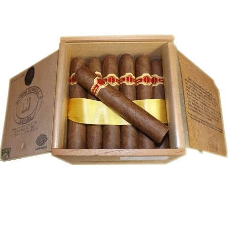
ダンヒルの特異さは、作り手ではなく「選び手」だったことにあります。キューバの名門ブランドの葉巻から最良分を現地で選んで自社専売した セレクション・スプレマ。その番号の体系は、パルタガス、ラモン・アロネス、モンテクリスト、H.アップマンといった名門を横断しました。本特集では、そのカタログ86アイテムを記録として残します。そして終章では、同じくキューバで自社商標の葉巻を作ったダビドフとの対比で、この商人の終わり方を見ます。ダビドフの撤退には「在庫を焼却した」という劇的な伝承が残る。ダンヒルの終わりは、契約満了という静かなものでした。
本特集の事実関係は、専門誌・業界誌（Cigar Aficionado、Cigar Journal、Halfwheel、Cigar Coop）、研究者の講演録（Iapichino「ダンヒル・キューバ葉巻史」、Cigar Sense 掲載）、オークション記録（Christie's、Online Cigar Auctions）、そして同時代の一次資料（ダンヒル公式カタログ1969–70年版、1976年の米国連邦最高裁判決）で裏取りした範囲に基づきます。資料によって年や数字が揺れる箇所（キューバ撤退の年、自社名ブランドの生産工場など）は検証欄に明記し、本文では両論を併記しています。逸話や伝承は、確証がないからといって切り捨てず、歴史的エピソードとして積極的に残します。その際は四つの区分――区分1＝確認された歴史的事実、区分2＝当時の新聞・書籍・関係者の証言や後年の回顧記事に記録された逸話、区分3＝愛好家や業界内で伝えられている伝承、区分4＝出典や成立時期が特定できない話――を各話に明示し、異説は一つに統一せず併記します。事実と物語を混同せず、しかし読み物としての面白さも損なわない。それが本特集の記録の仕方です。日本国内の状況は、当編集部の日本葉巻データベース（2026年11月20日時点）に基づきます。価格の円換算は £1＝¥209.1、$1＝¥159.7 で計算しました。なお、オークションハウス（Online Cigar Auctions）の写真は掲載に権利者の明示許可が必要なため、本特集では使用していません。該当アイテムの写真欄は NO IMAGE としています。
◆ 一、タバコ商の出発 ― 1907年、デュークストリート
1907年、アルフレッド・ダンヒル がロンドンのデュークストリートにタバコ店を開きました。もっとも事業の起点はそれより早く、1893年に自動車用品の販売から身を起こしたと講演録は伝えます。彼はジョージ6世とウィンストン・チャーチルの御用達タバコ商として名声を確立し、王室御用達となります。戦前からキューバの名門メーカーと販売・専売契約を結び、葉巻はダンヒルの看板事業の一つでした。1935年には、エル・レイ・デル・ムンドの上位版として ドン・カンディード がダンヒル専売ブランドとして創設されます（創設者はカンディード・ベガ・ディアス）。
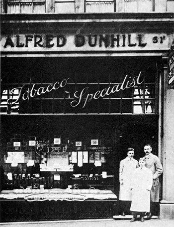
ダンヒルは葉巻の保管・輸送中の乾燥を嫌い、自社のヒュミドールと保管室（シガー・ルーム）を整備したことで知られます。「作る」ではなく「選ぶ・保管する」商人としての性格は、後のセレクション制度に直結します。顧客一人ひとりの好みを台帳に記録し番号で管理する発想も、この店の商いの原点でした（九章の逸話で触れます）。
◆ 二、生産体制 ― キューバに工場を持たなかった商人
まず結論から。ダンヒルはキューバに自社工場を一度も持ちませんでした。革命後のキューバで生産を担ったのは、国営 Cubatabaco の既存工場です。ダンヒルが持ち込んだのは「商標と仕様と選定」。現代の言葉で言えば OEM（委託生産）に近い形ですが、相手は民間メーカーではなく国営独占であり、ダンヒルは商標権者兼専売商でした。より正確には「商標ライセンス＋委託生産＋専属選定」という二層の体制です。
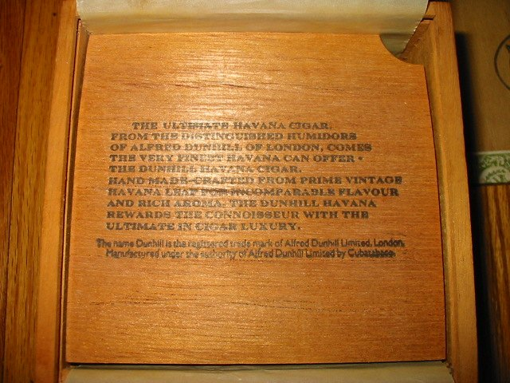
革命後、Cubatabaco はダンヒルに3ブランドの専売権を継続付与しました。ドン・カンディード、自社名義の ドン・アルフレード（1960年代末創設）、ラ・フロール・デル・プント（1970年代半ば創設とされる）。加えて、各名門ブランドのセレクション品も継続します。委託先の対応は次の通りです。
| ブランド | 委託先工場（キューバ） | 確度 |
|---|---|---|
| ドン・カンディード | Briones Montoto 工場（旧ロメオ・イ・フリエタ工場）。El Rey del Mundo 工場とする記録もあり | 両論 |
| ドン・アルフレード | José Martí 工場（旧 H. Upmann 工場） | 確認済み |
| ラ・フロール・デル・プント | Partagás 工場 | 確認済み |
| ダンヒル本体（1982–91） | Partagás 工場（CigarMind）。ロメオ・イ・フリエタ工場とする記録（Halfwheel）もあり | 両論 |
| セレクション各品 | 各ブランド本来の工場（パルタガス品は Partagás 工場、モンテクリスト品は H. Upmann 工場系など） | 確認済み |
ただし「名前だけ貸していた」のではありません。ダンヒル側の主たる関与は、次章で述べる選定（セレクション）という実務でした。自社名ブランドについても「ダンヒルの指示書に基づき専用に作られ、ダンヒルのバイヤーが選定し、自社仕様で箱詰めされた。通常生産品の貼り替えではない」と資料は述べます（CigarMind のダンヒル史）。一方で、セレクション品については「中身は通常生産品と同一で、差は選定と、ダンヒル在庫での約10カ月の追加熟成にあった」とするレビュアーの解釈もあります（Halfwheel）。選定と熟成が付加価値の核だったという点では、両者は整合します。
同じ体制でキューバにいたダビドフとの違いも、ここにあります。ダビドフは主生産をエル・ラギィート工場（コイーバを巻くために作られた工場）に集約し、仕様ブレンドで深く入り込んだ。ダンヒルは複数工場にまたがる「選定」のモデルでした。どちらも自社工場は持たず、どちらも1980年代後半に品質を巡る対立を深め、ほぼ同時期にキューバを去ります。
革命後の国有化は、キューバ国内だけの出来事ではありませんでした。1960年9月15日、キューバ政府は主要なハバナ葉巻製造会社5社の事業と資産を接収します。その余波は、米国連邦最高裁判所の1976年判決（Alfred Dunhill of London, Inc. v. Republic of Cuba, 425 U.S. 682）に記録されています。判決文によれば、ダンヒルは接収された会社から出荷された葉巻の米国の主要輸入業者の一つで、接収前の出荷分について約148,600ドルを、権利者を取り違えて接収後の管理者に支払ってしまいました。その返還をめぐり、旧所有者・管理者・輸入業者の間で争われ、最高裁は「誤って支払った金銭の返還拒否が国家行為であることは、記録上示されていない」と判断しました。注意すべきは、この判決が国有化そのものを無効としたものではないこと、そして判決の中でダンヒルはあくまで輸入業者として扱われ、キューバの工場所有者だったとは記されていないことです。ダンヒルが「工場を持たない商人」だったことは、法廷記録からも裏付けられます。
◆ 三、セレクション ― 番号で売られた「最良分」
ダンヒルのキューバ事業の中核は、セレクション制度でした。始期は1935年頃。ダンヒルはハバナの主要ブランドの葉巻を扱い、その中から最良分を選定して セレクション・スプレマ（Selección Suprema）の名で自社チャネル専売したのです。選定の方法は、各工場で「最上（supreme）」と格付けされるに足る熟練トルセドールの製品を、ダンヒルの代理人がキューバ現地で選んで取り置く、というものでした（Iapichino の講演録）。箱とキャビネットには、通常のビトラ名に加えて「Selección Suprema」の語と、ダンヒル独自の番号が付されました。番号制そのものが、ダンヒルのマーケティング上の革新とされます。
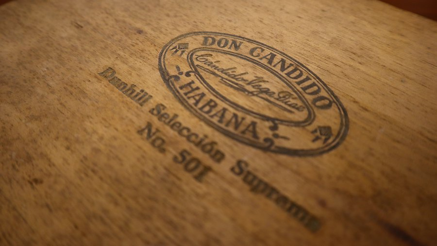
包装形態は50本キャビネットと25本箱が標準で、100本以上、最大1,000本のギフトキャビネットもありました。革命前は民間各社との契約、革命後も Cubatabaco の下で継続し、1982年、自社名ブランド「ダンヒル」の開始に伴って、全ブランドのセレクション品と専売3ブランドは整理・終了します。対象ブランドは、パルタガス、H.アップマン、ラ・コロナ、カバーニャス、ロメオ・イ・フリエタ、ラモン・アロネス、オヨ・デ・モンテレイ、ボリバル、ポル・ララニャーガ、ラ・フロール・デ・クーバ、そしてエル・レイ・デル・ムンドとモンテクリスト（Halfwheel の列挙）です。
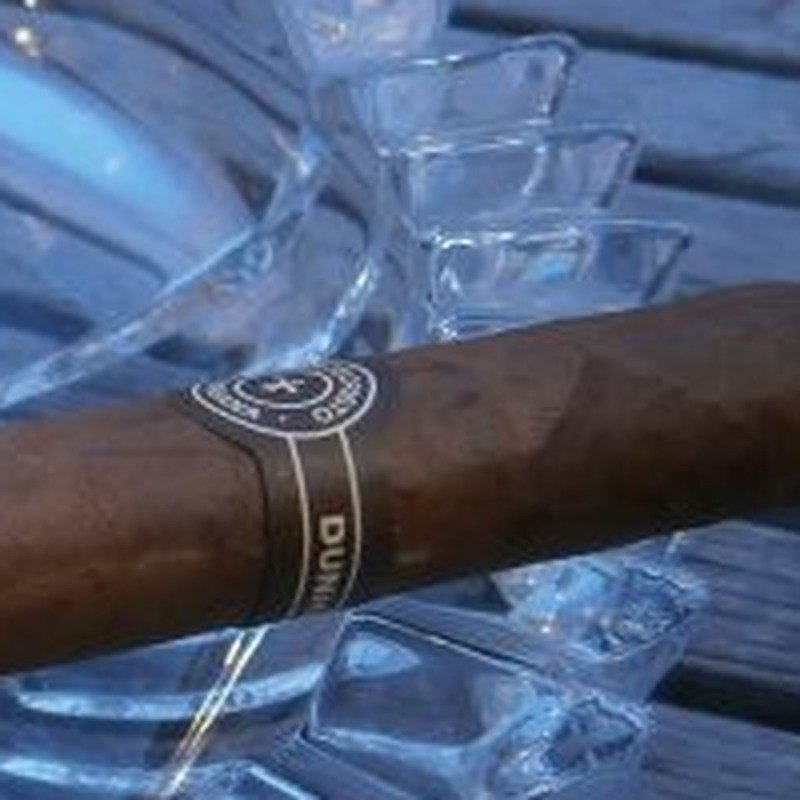
キューバ時代のセレクション品が「ブランドのバンド＋ダンヒルのバンド」の2本併記で売られたかは、本特集の追加調査で裏取りが進みました。第一に、コレクターの実物検証（Dusky Beauties、2013年）で、モンテクリスト・セレクション No.1 の未着火実物に、紋章バンドの直下に「DUNHILL」バンドが併記されている状態が目視確認できました（上の写真）。第二に、Christie's のモンテクリスト・セレクション・スプレマ No.2 のロット説明文に「Dunhill bands」と明記があります。箱側の証拠（ドン・カンディード箱蓋の併記刻印）と合わせ、バンド併記は実在したと判断します。一方、「トリプルリング」（3本バンド）については、キューバ時代の実物は確認できず、実在が確認できるのは2015年の復刻品（六章）です。
選定された葉巻は、ロンドンに届いてからもダンヒルの手を離れませんでした。1969–70年の公式カタログ（当時の一次資料）には「The Dunhill Maturing Rooms」と題する一節があり、その工程が具体的に記されています。到着した葉巻はまず落ち着かせ、シダー材のキャビネットに収めて、定期的にサンプルを取り出して検査する。セレクション・スプレマについては「ダンヒルの熟成室で少なくとも9か月、注意深く調整された後でなければ販売しない」と明記されています。さらに、購入した葉巻を店に無料で預け、好きな時に引き出せる保管サービスも提供されていました。ロンドンでの長期熟成と保管こそが、通常品とセレクション品を分けた付加価値の正体です。なお、ダンヒル自身の刊行物『About Smoke』（1932年頃）に基づく説明では、熟成期間は「12か月以上」とされています（Iapichino の講演録が同書を出典として特定）。約37年を隔てた自社刊行物同士の記述の差であり、対象とする時期や工程の範囲が異なるため、本特集では両方を併記します。
◆ 四、カタログ ― 86アイテムの記録
セレクションの番号はブランドごとに独立しています。同じ「No.51」でもブランドが違えば別物です。以下は、調査で確認できた86アイテム（専売3ブランド24件＋セレクション62件）の記録です。出典は Iapichino の講演録、Min Ron Nee の百科事典系譜のサイズ表（Pipedia 転記）、Perelman『Pocket Cyclopedia of Havana Cigars』、Cigar Journal のブランド史、1969–70年の公式カタログ、そして Christie's と Online Cigar Auctions の落札記録。価格は特記なき限り落札価格（手数料別）で、円換算は £1＝¥209.1 です。写真が権利上使えない、あるいは未発見のアイテムは NO IMAGE としました（オークションハウスの写真は掲載許可が必要なため不使用）。確度欄の表記は、本特集の四区分（区分1＝確認された事実、区分2＝記録された話、区分3＝伝承、区分4＝出典未特定）に対応させています。裏付けの弱いアイテムも、記録として残すために落とさず、区分を示して載せています。
ドン・カンディード（専売ブランド、1935年創設。1982年終了）
エル・レイ・デル・ムンドの上位版として設計され、Min Ron Nee は「monumental（記念碑的）」と評しました。Cigar Aficionado の Connoisseur's Corner では No.500（1980年製）が100点、No.501（1960年頃）が96点を記録しています。
| 番号 | ビトラ・サイズ | 備考・価格実績 | 確度 |
|---|---|---|---|
No.500 | ライン最大 6½″×48 | 50本キャビネットが標準形。1969–70年公式カタログの当時価格は £72 10s。Christie's 落札 £3,520／£3,850／£3,300（約¥74万〜¥81万）。「故ユル・ブリンナー旧蔵、1960年箱」のキャビネットも同価格帯。CA 100点（1980年製） | 確認済み |
| No.501 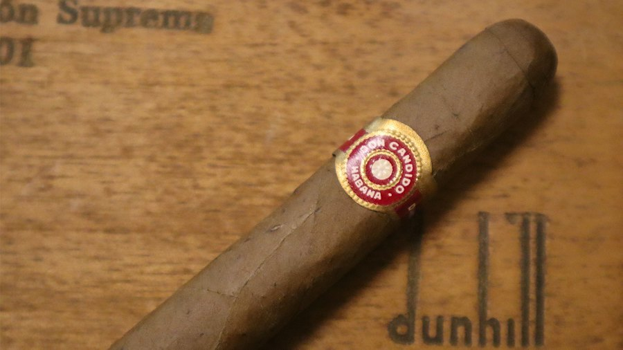 | Cervantes 6½″×42 | CA 96点（1960年頃、2025年に再評価記事）。箱蓋に「Dunhill Selección Suprema No. 501」の刻印（写真は三章）。1961年のトロント実売価格 C$25.00／25本箱 | 確認済み |
| No.502 | Marevas 5⅛″×42 | 1961年実売 C$17.50／25本箱。1969–70年公式カタログ：25本箱 £11 16s 3d | 確認済み |
| No.503 | 不明 | 1961年実売 C$16.25／25本箱。サイズは諸ソースとも不明 | 有力 |
| No.504 | Campanas 5½″×52 | ベリコソ型 | 確認済み |
| No.505 | Entreactos 3⅞″×30 | C.Gars 2021年10月オークションの目玉ロットに選定（結果価格は未確認） | 確認済み |
| No.506 | Coronas Gordas 5⅝″×46 | 「伝説的」とされる銘柄。Christie's：25本キャビネット £1,650／£1,485（約¥31万〜¥35万）。C.Gars：5本 £970（約¥20万） | 確認済み |
| No.507 | 不明 | サイズ不明 | 有力 |
| No.508 | Panetelas Largas 6⅞″×28 | 確認済み | |
| Lonsdales（番号なし） | Cervantes 6½″×42 | No.501 と同一サイズの無番号品 | 有力 |
| Short Coronas（番号なし） | Marevas 5⅛″×42 | No.502 と同一サイズの無番号品 | 有力 |
ドン・アルフレード（専売ブランド、1960年代末創設。1982年終了）
アルフレッド・ダンヒルへのオマージュとして Cubatabaco が創設したブランド。José Martí 工場（旧 H. Upmann 工場）製。創設は1960年代末とする資料（Iapichino 講演録・英語版）が中心ですが、同講演録のスペイン語版は1970年代初頭の欧州市場への再投入として位置づけており、本特集では「1960年代末創設」と表記します。箱蓋内側に「DON ALFREDO HABANA／Seleccion Numero ##」と dunhill ロゴが入ります。
| 番号 | ビトラ・サイズ | 備考・価格実績 | 確度 |
|---|---|---|---|
| No.51 | Cervantes 6½″×42 | 最も流通実績が多い。Christie's：25本キャビネット £748（約¥16万）。Online Cigar Auctions 2024年：部分箱17本 £4,300（約¥90万、予想 £2,000–2,500 を大幅超過）。実物写真は権利上不使用 | 確認済み |
| No.52 | Pirámides 6⅛″×52 | C.Gars 2016年6月カタログ：5本 est. £400–500 | 確認済み |
| No.53 | Coronas 5⅝″×42 | C.Gars 2016年6月：10本 est. £650–750 | 確認済み |
| No.54 | Marevas 5⅛″×42 | C.Gars 2016年6月：10本 est. £550–650 | 確認済み |
| No.55 | Perlas 4″×40 | Christie's：部分箱16本 £198（約¥4万） | 確認済み |
| No.56 | Coronas Grandes 6⅛″×42 | 確認済み |
ラ・フロール・デル・プント（専売ブランド、1970年代半ば創設）
Partagás 工場製。名称はダンヒルパイプの「ホワイトスポット（punto blanco）」に由来するという説があります。
| 番号 | ビトラ・サイズ | 備考・価格実績 | 確度 |
|---|---|---|---|
| No.301 | Cervantes 6½″×42 | 確認済み | |
| No.302 | Coronas 5⅝″×42 | 確認済み | |
| No.303 | Marevas 5⅛″×42 | 確認済み | |
| No.304 | Parejo 6⅜″×40 | 有力 | |
| No.305 | Parejo 6⅜″×42 | Christie's：25本キャビネット est. £600–800 → 落札 £935（約¥20万） | 確認済み |
| No.306 | 不明 | C.Gars 2021年10月オークションの目玉ロットに出品歴（存在は実質確認、サイズ未詳） | 有力 |
| No.307 | Carolinas 4¾″×26 | C.Gars 2021年10月目玉ロットに出品歴 | 確認済み |
パルタガス（セレクション・スプレマ）
| 番号 | ビトラ・サイズ | 備考・価格実績 | 確度 |
|---|---|---|---|
| No.150 | 5¾″×42–46 | 25本箱・50本キャビネット両形。C.Gars 2010年：50本フルキャビネット £7,800（約¥163万、1980年代製）。ゲージは年代で42／44／46の記録が混在 | 確認済み（サイズ両論） |
| No.151 | Placera 4⅞″×34 | C.Gars 2021年10月目玉ロットに出品歴 | 確認済み |
| No.153 | 5⅞″ | 1969–70年公式カタログ：10本箱 £5 3s。当初は番号のみの伝承扱いだったが、今回の追加調査でカタログから裏付けられた | 確認済み |
| No.154 | 不明 | C.Gars 2009年12月：50本キャビネット出品。サイズ未詳 | 有力 |
| No.155 | 6½″（標準ゲージ） | 1969–70年公式カタログ：25本箱 £14 11s 3d | 確認済み |
| No.267 | 6¼″×42 | 革命前。追加裏取りなし | 区分4（出典未特定） |
| No.281 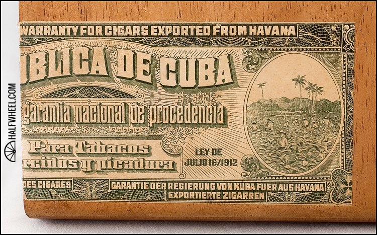 | 5⅛″×28 | 1950年代。Halfwheel が「誰も知らなかった番号」として開封レビュー。写真は箱に貼られたキューバ政府保証シール | 有力 |
| No.777 | 7⅝″×49 | 100本キャビネットが本来の形。Christie's「ダンヒルのヒュミドールから出た」セール：1975年製7本部分キャビネット £748（約¥16万）。C.Gars 2010年：44／100本部分キャビネット £8,200（約¥171万）。1969–70年公式カタログ：100本キャビネット £78（長さの表記は7⅛″で、Christie's の7⅝″と差異） | 確認済み |
ラモン・アロネス（セレクション・スプレマ）
| 番号 | ビトラ・サイズ | 備考・価格実績 | 確度 |
|---|---|---|---|
| No.50 | 6½″／6¼″ | Halfwheel レビュー個体は「Flor de A. Allones」名義で、3ビトラ詰め合わせ箱の中の1本（1961年製）。Christie's 2005年：14本 £440（約¥9万、禁輸前）。サイズ・形態の記録が複数系統 | 有力（両論） |
| No.69 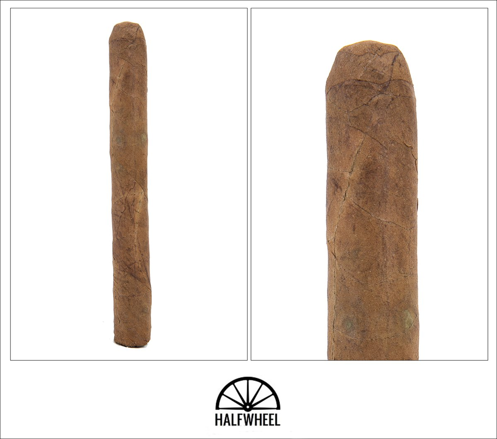 | 6⅞″（太ゲージ） 1950年代 | Halfwheel レビューあり。写真は実物全長とヘッドの拡大（レビュー写真のためバンドは写っていません）。1969–70年公式カタログ：10本箱 £6 14s 6d、100本キャビネット £67 | 有力 |
| No.79 | 6½″（細ゲージ、先細り） | 1969–70年公式カタログ：50本束 £22 5s | 確認済み |
| No.7 E.M.S. | 4¾″ | Christie's：25本箱 est. £400–500 → £572（約¥12万）。「E.M.S.」は English Market Selection の略とみられる | 有力 |
| No.11 | 5⅜″×42／5⅛″×40 | ソース間でサイズ相違（Pipedia／Perelman） | 有力（両論） |
| No.81 | 5½″×40／6¼″×39 | No.82 とサイズが入れ替わった形で両ソースが食い違う | 区分4（両論） |
| No.82 | 6¼″×39／5½″×40 | 同上 | 区分4（両論） |
| No.280 | 5⅜″×42 | Perelman／Pipedia 一致 | 有力 |
| No.622 | Conchita 5″×35 | オヨの No.622 と同番号・同サイズ（番号体系の共有を示唆） | 有力 |
| No.898 | 6⅝″×44 | C.Gars 2016年6月カタログ：10本 est. £440–520（1960年代）。「Dunhill Selección No.699」とする転記は、パンチ No.699（1969–70年カタログで確認）との混同の可能性も | 区分3（伝承） |
| Variety No.70 | 詰め合わせ | No.50／No.25／No.15 の詰め合わせ。革命前 | 区分3（伝承） |
モンテクリスト（セレクション・スプレマ）
| 番号 | ビトラ・サイズ | 備考・価格実績 | 確度 |
|---|---|---|---|
| No.1 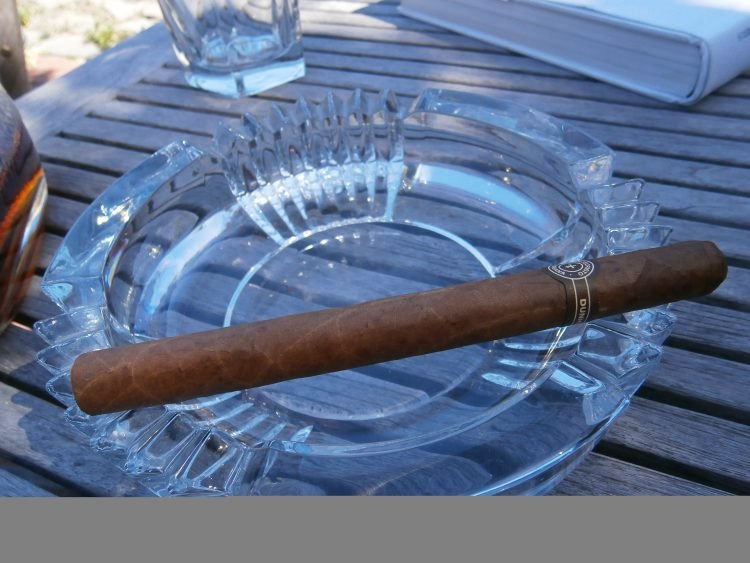 | Cervantes 6½″×42 | モンテクリスト No.1 のダンヒル選定品。バンド併記の実物写真を本特集の追加調査で発見（三章）。Online Cigar Auctions 2024年：50本箱 £17,000（約¥355万、est. £10,000–13,000）。1969–70年公式カタログ：50本キャビネット £62 15s。中身は通常の No.1 と同一の可能性が高く、差はダンヒルの品質管理と熟成（コレクター検証） | 確認済み |
| No.2 | Pirámide 6⅛″×52／5⅝″×42 | Christie's：25本箱（1972年以前）、説明文に「Dunhill bands」の明記。一方、2024年の落札ロット（25本ドレスボックス、£6,000＝約¥125万）は 5⅝″×42 と記録され、サイズは両論併記。実物写真は権利上不使用 | 確認済み（サイズ両論） |
| No.3 | Corona 5⅝″×42 | 2024年に「Dunhill Seleccion Supreme B No. 3」£8,200（約¥171万）のロットあり（「B」の意味は未確認） | 有力 |
| No.4 | Mareva 5⅛″×42 | 1969–70年公式カタログ：5″、50本束 £21 17s 6d | 有力 |
| No.5 | Perla 4″×40 | 有力 | |
| No.32 | Perla 4″×40 | No.5 と同一サイズ | 有力 |
| Tubos | Coronas Grandes 6⅛″×42 | チューボス仕様 | 有力 |
| Especial | Laguito No.1 7½″×38 | C.Gars 2016年6月カタログでは「7″×38、カナダ市場向け」と記録（サイズ両論） | 有力 |
H.アップマン（セレクション・スプレマ）
| 番号 | ビトラ・サイズ | 備考・価格実績 | 確度 |
|---|---|---|---|
| No.11 | Petit Corona 5⅛″×42 | 有力 | |
| No.13 | Crema 5½″×40 | 有力 | |
| No.23 | 7″×33（両論） | 2024年落札ロット（25本箱、禁輸前、「Ex. Jack & Charlie's 21」）£4,100（約¥86万）。実物は Pipedia の Ninfa（33ゲージ）より太く見え、サイズは両論併記。実物写真は権利上不使用 | 確認済み（サイズ両論） |
| No.25 | Mareva 5⅛″×42 | C.Gars 2016年6月：10本 est. £250–300（1970年代） | 確認済み |
| No.30 | Cervantes 6½″×42 | 有力 | |
| No.50 | 6¼″×42 | C.Gars 2016年6月：10本 est. £480–540（1970年代）。サイズは1969–70年公式カタログの記載（C.Gars 記録は6⅛″、両論） | 有力 |
| No.87 | 6¼″（太ゲージ） | 1969–70年公式カタログ：100本キャビネット £71 15s | 確認済み |
| No.205 | 5⅛″ | C.Gars 2021年10月オークションの目玉ロット（禁輸前）。1969–70年公式カタログ：10本箱 £5 3s | 有力 |
| No.207 | 5⅛″×42 | 顧客特注ヒュミドール：100本入り、蓋裏に「Specially Selected for H.J.J.（H.J. Joel, Esq）」。2024年落札 £35,000（約¥732万）。実物写真は権利上不使用 | 確認済み |
| No.222 | 55ゲージのペルフェクト | 通称 "Flying Pig"。CA Connoisseur's Corner で 98点（1963年頃）。標準リストに載らない番外の太物 | 有力 |
ロメオ・イ・フリエタ（セレクション・スプレマ）
| 番号 | ビトラ・サイズ | 備考・価格実績 | 確度 |
|---|---|---|---|
| No.1 | Cervantes 6½″×42 | 有力 | |
| No.2 | Mareva 5⅛″×42 | 有力 | |
| No.3 | Corona 5⅝″×42 | 有力 | |
| No.11 | Petit Cetro 5⅛″×40 | 有力 | |
| No.108 | コロナ（50本キャビネット） | C.Gars 2010年：£3,900（約¥82万、1970年代初頭）。1969–70年公式カタログ：6″、50本キャビネット £13 15s | 有力 |
| No.127 | 不明 | Christie's：14本部分箱 est. £300–400 → £550（約¥12万）。C.Gars 2021年10月目玉ロットにも出品歴 | 確認済み |
| No.620 | Julieta 7″×47 | チャーチル型 | 有力 |
| No.779 | 10本箱（サイズ未詳） | 2010年11月 C.Gars オークションで当時の世界記録 £11,500（約¥240万）。日本の収集家が落札（日本編で詳述） | 確認済み |
ポル・ララニャーガ／オヨ・デ・モンテレイ／その他
| 番号 | ビトラ・サイズ | 備考・価格実績 | 確度 |
|---|---|---|---|
| ポル・ララニャーガ No.31 | Magnums 6¾″×50 | Christie's「MAGNUMS FROM DUNHILL」セールの目玉。Halfwheel レビュー：11本ロット $3,237（1本 $294＝約¥4.7万）。C.Gars で £29,000 の記録とする報道も（詳細未確認）。1969–70年公式カタログ：25本箱 £18 2s 6d（長さ表記は6⅛″で、オークション記録と差異） | 確認済み（一部有力） |
| ポル・ララニャーガ No.32 | Mareva 5⅛″×42 | 1969–70年公式カタログ：10本箱 £4 6s 6d | 有力 |
| オヨ No.159 | 不明 | C.Gars 2009年12月オークション出品（CA 報道） | 有力 |
| オヨ No.162 | 5″ | 1969–70年公式カタログ：25本箱 £10 5s | 確認済み |
| オヨ No.622 | Conchita 5″×35 | ラモン・アロネス No.622 と同番号・同サイズ | 有力 |
| オヨ No.852 | 不明 | C.Gars で £27,500 の記録とする報道（数量・形態の詳細未確認） | 区分4（出典未特定） |
| エル・レイ・デル・ムンド No.98 | Mareva 5⅛″×42 | Christie's：25本箱 est. £400–500 → £638（約¥13万）。1969–70年公式カタログ：25本箱 £10 5s | 確認済み |
| ラ・コロナ No.29 | 4¾″×40 | C.Gars 2016年6月：10本 est. £320–360（禁輸前） | 有力 |
| カバーニャス No.501 | 6½″×43 | C.Gars 2016年6月：10本 est. £340–400（禁輸前）。ドン・カンディードの No.501 とは別物（番号はブランド別） | 有力 |
| カバーニャス No.504 | 5″×42 | C.Gars 2016年6月：10本 est. £250–300（禁輸前） | 有力 |
| ラ・フロール・デ・クーバ No.51 | 6½″×43 | C.Gars 2016年6月：10本 est. £550–650（1970年代） | 有力 |
| ラ・フロール・デ・クーバ No.53 | 5½″×42 | C.Gars 2016年6月：5本 est. £190–230（1970年代） | 有力 |
| Special Seleccion No.415（ブランド不詳） | 60本キャビネット | C.Gars 2017年6月：禁輸前、est. £6,000–8,000 → 落札 £6,100（約¥128万）。表記は "Suprema" でなく "Special Seleccion" | 有力 |
パンチ／ボリバル（セレクション・スプレマ）
| 番号 | ビトラ・サイズ | 備考・価格実績 | 確度 |
|---|---|---|---|
| パンチ No.137 | 5″ | 1969–70年公式カタログ：10本箱 £4 6s 6d | 確認済み |
| パンチ No.699 | 7″（太ゲージ） | 1969–70年公式カタログ：100本キャビネット £76 10s。Halfwheel が2011年の C.Gars カタログ速報で言及した「Selección No.699」は本品とみられる（ブランド不詳だった番号を今回の追加調査で特定） | 確認済み（同一視は有力） |
| パンチ No.756 | 3⅞″ | 1969–70年公式カタログ：25本箱 £7 13s 9d | 確認済み |
| ボリバル No.133 | 5½″（太ゲージ） | 1969–70年公式カタログ：25本箱 £12 16s 3d、100本キャビネット £51 15s | 確認済み |
パンチとボリバルのセレクション品は、今回の追加調査で1969–70年の公式カタログから確認できました。ボリバルは Iapichino の対象ブランド列挙に含まれていましたが、番号付きアイテムの具体例が取れたのは今回が初めてです。また、現代的な意味での「限定モデル」（周年記念・数量限定を銘打った製品）はキューバ時代には確認できず、それに相当する特別枠は、顧客特注の「Specially Selected」ヒュミドール（H.アップマン No.207）、王室向け選定の銘（五章のディアマンテス）、そして巨大ギフトキャビネットの3層でした。セレクション自体が恒常的な「選定＝限定」の仕組みだった、と解釈できます。
◆ 五、自社名ブランド「ダンヒル」 ― 1982年の合意、1984年の発売
セレクションの整理と引き換えに、ダンヒルは自社名そのものを冠したブランドをキューバで始めます。交渉は1977年から始まり、1982年に合意、1984年に発売。当初10カ国から30カ国へ拡大しました。ビトラは8種。箱とシダー板には「MADE IN HAVANA CUBA／MATURED IN THE DUNHILL HAVANA ROOM」の文言と、王室御用達のシールが入りました。
| 銘柄 | ビトラ | サイズ・箱形態 | 備考・価格実績 |
|---|---|---|---|
| アタード 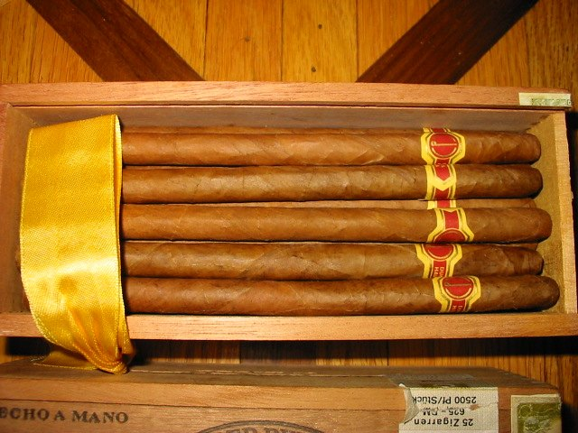 | Panetelas Largas | 7″×42 25本キャビネット | Christie's：25本キャビネット £286（約¥6万）。写真：Black plague／Wikimedia Commons（CC BY-SA 3.0）。ドイツ向け価格ラベル（25本 635マルク）も写っています |
| キャビネッタ 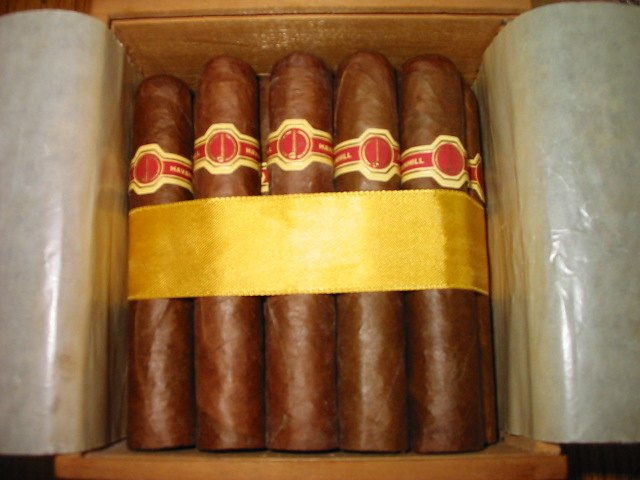 | Robustos | 4⅞″×50 25本キャビネット | 2024年：部分箱24本 £18,200（約¥381万）。Christie's：25本 £4,620（約¥97万）。Halfwheel 推定1本 $150（約¥2.4万）。写真：Wikimedia Commons（CC BY-SA 3.0） |
| エストゥペンドス 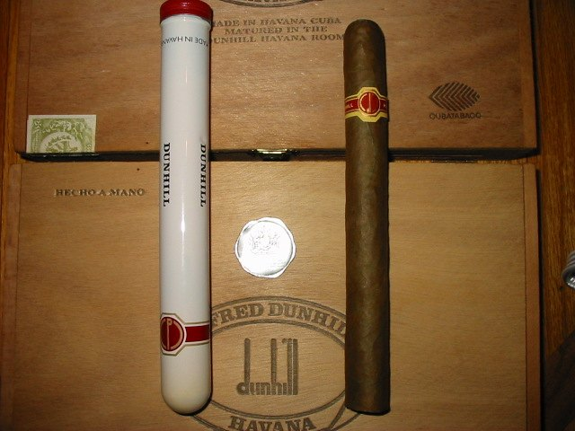 | Julieta No.2 | 7″×47 10本アルミチューボス箱のみ | C.Gars 2017年：初期1980年代の10本チューボ £8,300（約¥174万）。写真：Wikimedia Commons（CC BY-SA 3.0） |
| ハバナ・クラブ 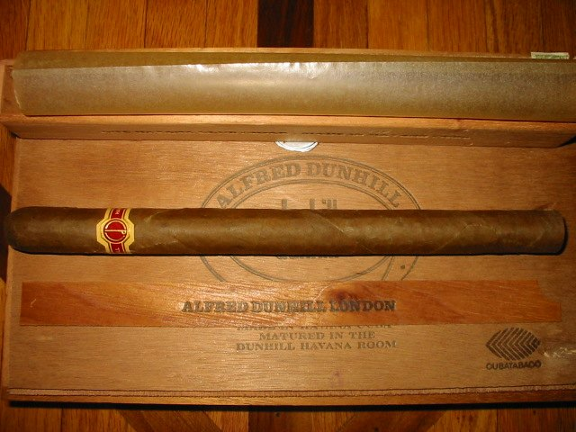 | Gran Coronas | 9¼″×47 個別シダー箱入り | 2024年：4本セット £3,100（約¥65万、1986年製）。Christie's：5本箱 £1,320–1,430。写真：Wikimedia Commons（CC BY-SA 3.0） |
| マレコン | Cervantes | 6½″×42 25本ボワットナチュール | 2024年：25本 £15,100（約¥316万）。C.Gars 2016年：25本箱 £7,810（約¥163万）。実物写真はオークション出典のみのため権利上不使用 |
| モヒート 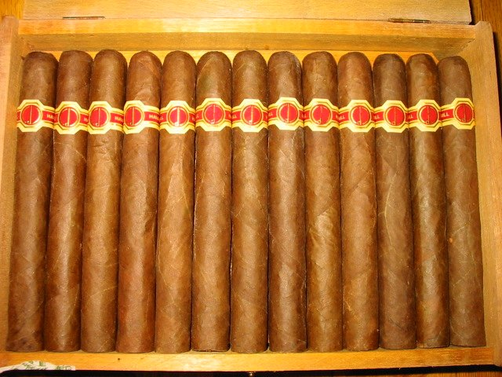 | Coronas | 5⅝″×42 25本箱（ボックスプレス） | C.Gars 2016年：25本箱 £5,910（約¥124万）。Christie's £1,045 の記録も（年代・状態で開き大）。写真：Wikimedia Commons（CC BY-SA 3.0） |
| トゥボス | Coronas Grandes | 6⅛″×42 25本チューボス入りドレス箱 | Christie's：25本 £1,045（約¥22万） |
| バラデロ | Marevas | 5⅛″×42 25本ボワットナチュール | 価格実績は今回未確認 |
8種のほかに、別系統の ディアマンテス（4¼″×34、100本キャビネット）があります。C.Gars 2016年カタログのロットには「HRH Prince of Wales Specially Selected for Alfred Dunhill of London Inc」――皇太子（当時）向け選定の銘がありました。王室御用達商としての特別選定枠を示す、特異なロットです。また、厳選品の3／4／5本入りギフトパックも存在しました（Iapichino）。
なお、1988年6月11日の英国誌 The Spectator（「Summer Food and Wine」）は、ダンヒルが同年9月に、ハバナで手巻きされた9サイズで葉巻ラインを再発売する計画だと報じています（区分2＝当時の雑誌に記録された話）。当時の自社名ブランドは8種でしたから、新サイズを加えた再活性化の計画と読めますが、その実施を確認できる資料は見つかっておらず、計画がそのまま実行されたかどうかは分かりません。記録としてここに残します。
自社名ブランドの終了年には二系統あります。1991年に契約満了・更新せず（Wikipedia 系譜、Cigar Coop。理由として、ダビドフという同じ国営生産の高級ブランド同士の競合に Cubatabaco が関与を嫌ったこと、ダンヒル側が既に非キューバ移転を検討していたことが挙げられます）。もう一方は、Iapichino のダンヒル史がいう1989年の合意終了です。「1989年に合意が終わり、在庫と移行期間を経て1991年に市場から消えた」と読めば両立し得ますが、一次資料での確定はできていません。本特集では両論併記とします。また生産工場も、Partagás 工場説（CigarMind）とロメオ・イ・フリエタ工場説（Halfwheel のキャビネッタ・レビュー）が併存し、ビトラや時期で分かれていた可能性が残ります。品質を巡る対立が1980年代後半に積み上がっていたことは複数の資料が述べますが、ダビドフの「焼却」のような劇的な単一事件は、ダンヒル側には確認できません。
◆ 六、キューバ後 ― 名前は残り、魂は置いてきた
1991年の離脱後、ダンヒルは非キューバ生産へ移行します。まずカナリア諸島生産の時期があり、その後 General Cigar が生産と米国流通を担い、生産はドミニカ共和国とホンジュラスに分かれました。米国時代のラインは、サインド・レンジ（ニカラグア産ラッパー、カメルーン・バインダー、ドミニカ＋ニカラグア・フィラー。General Cigar Dominicana 製）、エイジド・マデューロ、ヘリテージ、1907 by Dunhill などです。
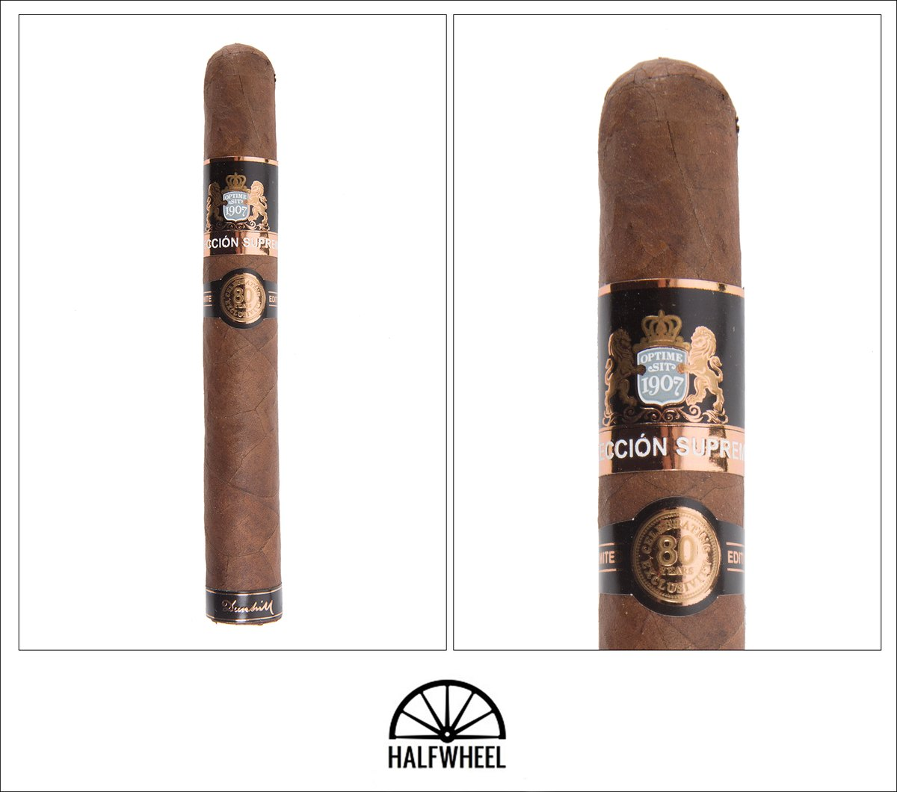
2015年には、セレクション80周年記念として サインド・レンジ・セレクション・スプレマ（6×50 トロ、$20、8本箱 $160、Halfwheel 92点）が発売されました。主バンド（OPTIME SIT 1907／SELECCIÓN SUPREMA）、80 YEARS の副バンド、フットバンドという3本のバンド構成は、キューバ時代へのオマージュそのものです。ただし総括として、往時のキューバ品に比べ非キューバ期のダンヒルは批評・市場での存在感が小さく、「名前は残ったが魂はキューバに置いてきた」というのが業界記事の基調でした（CigarMind）。
◆ 七、撤退 ― 2017年の発表、2018年の完了
2017年2月、British American Tobacco（BAT）がダンヒルの葉巻とパイプタバコの終了を発表しました（Cigar Coop、2017-02-08）。General Cigar 社長の Regis Broersma もこれを確認しています。市場からの撤退完了は2018年半ば。米国の FDA 承認コストが重くのしかかる時期と重なりました。
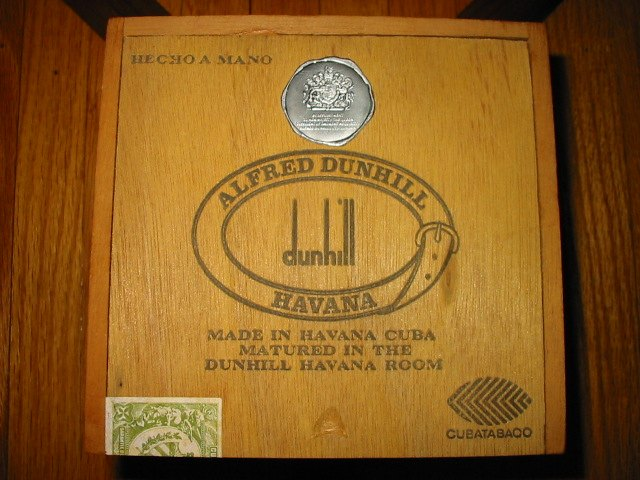
切り分けが重要です。撤退したのは葉巻とパイプタバコだけでした。紙巻タバコのダンヒルは BAT の主力プレミアム銘柄として今も存続し、「ダンヒル」の高級品ブランド（店舗・パイプ本体・革製品）は Richemont（Alfred Dunhill Ltd）の下にあります。系譜をたどれば、1967年にタバコ部門が Carreras Rothmans 側へ分離し、1993年に高級品（Richemont）とタバコ（Rothmans International）が正式に分かれ、1999年に Rothmans が BAT と合併して、タバコの商標は BAT へ移りました。パイプタバコのブレンド（My Mixture 965、Nightcap 等）は2019年に STG が権利を得て「Peterson」名義で復刻されましたが、葉巻にはこの受け皿がありません。現在、ダンヒル名義の正規の葉巻は存在しません。
◆ 八、コレクター市場 ― 「純プラチナ」と呼ばれる現在
セレクションの供給が止まってから40年以上（自社名ブランドのキューバ生産も1989–91年に終了）。キューバ製ダンヒルは、ヴィンテージ・ハバナ市場の頂点に位置します。Whisky Advocate（2018）は「キューバ製ダンヒルとダビドフは、葉巻コレクター界の純プラチナ（pure platinum）で、あらゆるオークションの目玉ロット」と表現しました。ダンヒル自身が箱内シダー板に謳った「THE ULTIMATE HAVANA CIGAR（究極のハバナ葉巻）」という自己規定は、市場でもそのまま通用しています。
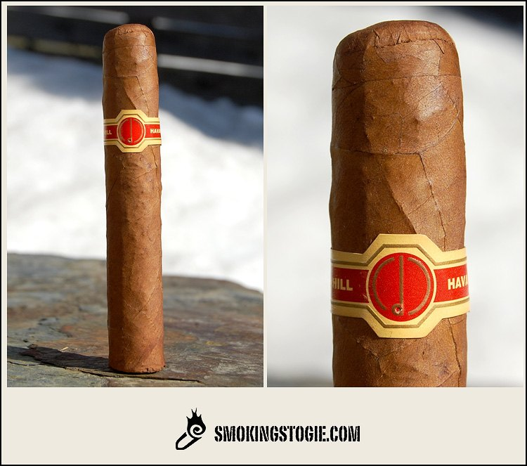
| アイテム | 実績 | 円換算 |
|---|---|---|
| ドン・カンディード No.500 | CA 採点 100点（1980年製）。50本キャビネット £3,300–3,850 | 約¥69万〜¥81万 |
| キャビネッタ（25本） | Christie's £2,310–5,500／C.Gars 2017年 £11,000 | 約¥48万〜¥115万／約¥230万 |
| モンテクリスト・セレクション No.1（50本箱） | 2024年 £17,000（予想 £10,000–13,000 を超過） | 約¥355万 |
| H.アップマン No.207（特注ヒュミドール） | 2024年 £35,000 | 約¥732万 |
| ロメオ・イ・フリエタ No.779（10本箱） | 2010年 £11,500（当時の世界記録） | 約¥240万 |
| エストゥペンドス（10本チューボ） | C.Gars 2017年 £8,300 | 約¥174万 |
専門家の評価も際立ちます。CA の採点でドン・カンディード No.500 が100点、No.501 が96点、H.アップマン No.222 が98点。100点は Cigar Aficionado の歴史でも極めて稀です。現代ハバノスの格付けと比べれば、エディシオン・リミターダが「年次の特別枠」、レゼルバとグラン・レゼルバが「熟成と数量で担保された最上位枠」だとすれば、セレクションは「選定者の目利きと熟成管理で担保された最上位枠」でした。制度としては別物ですが、「通常ラインの上に置かれた、根拠のある最上位枠」という機能は同じで、威信の源泉が限定数ではなく選定と熟成にあった点が、最大の違いです。
◆ 九、逸話 ― 台帳、爆撃、午前4時の電話
この章の話は、事実として確認できた経緯とは分けて記します。CigarScope Japan は葉巻文化を後世に伝える読み物であり、確証のない話も、面白い歴史的エピソードとして切り捨てずに残します。その代わり、各話に四つの区分を明示します。区分1＝確認された歴史的事実。区分2＝当時の新聞・書籍・関係者の証言や、後年の回顧記事・研究発表に記録された逸話。区分3＝愛好家や業界内で伝えられている伝承。区分4＝出典や成立時期が特定できない話。異説は一つに統一せず、そのまま並べます。物語を楽しみながら、確度も一緒に味わってください。
1907年の開業当初、デュークストリートの店は「オーダーメイドのブレンダー」の事務所のような存在でした。客一人ひとりに合わせて調合したブレンドは「My Mixture Book」という台帳に記録され、番号が振られます。その数は20世紀末までに約36,700件に達したといいます。主にパイプタバコのブレンドの話ですが、「顧客の好みを記録し、番号で管理する」という発想は、後の葉巻セレクション制度の番号制にも通じる、ダンヒルの商いの原点です。（出典：Smokingpipes「History of Dunhill Tobacco」、C.Gars ブログ）
1941年4月16日夜から17日未明にかけてのロンドン大空襲で、約1トンのパラシュート地雷2発がダンヒルの店を直撃し、大半が破壊されました（区分1）。ジャーミンストリート側は全壊し、在庫の大半と博物館コレクションは失われましたが、店の猫は生き延びたといいます（この細部は区分3の言い伝え）。職員たちは水と薄暗がりの中で在庫と通信販売の記録を救い出しました。創業者の息子アルフレッド・ヘンリーが、破壊された店舗の瓦礫の中で商品を売る姿が写真に残っています。店は1950年代に拡張・再建されました。なお、襲撃の翌朝、瓦礫の撤去を監督するアルフレッド・ダンヒルの姿を写した写真が1941年のうちに英国から米国へ送られていたことは、米国の業界紙 Radio Daily（1944年8月24日号）が、ニューヨークのテレビ局による再現番組を紹介する記事の中で記録しています（写真そのものの現在の所在は未確認）。（出典：Balfour『Alfred Dunhill: One Hundred Years And More』、Wikipedia「Alfred Dunhill Limited」、The Gentleman's Flavor、Pipes Magazine、Radio Daily 1944年8月24日号）
爆撃の夜、チャーチルの葉巻はどうなったのか。この話には、伝わり方がいくつもあります。無理に一つへ寄せず、区分を付けて並べます。
区分2（後年の新聞記事に記録された版）：2007年6月、英紙 The Observer の回顧記事（Ned Temko「Huffing and puffing on my last cigar」）はこう記します。1941年4月17日午前3時頃の爆撃の後、数時間してチャーチル自ら店に電話をかけ、預けてあった個人用の葉巻在庫が無事かどうかを確かめた。そして戦時中の彼の葉巻は、その在庫から定期的に供給された、と。これは2007年の回顧記事であり、1941年の一次記録ではありません。電話の正確な時刻も記されていません。
区分3（愛好家に伝わる「午前4時」版）：もっと劇的な版も伝わっています。爆撃の夜、店の従業員が午前4時にチャーチルへ電話をかけ、彼の葉巻が無事だったことを伝えた――という話で、葉巻愛好家の媒体では「popular tale（よく語られる言い伝え）」と明記されて流通しています。電話をかけたのが店側で、時刻が「午前4時」と特定されているのが、この版の特徴です。
区分4（出典未特定の異説）：英語版 Wikipedia の版では、破壊されたのはジャーミンストリートの店で、私蔵コレクションは安全な場所へ移されていた、という形になっています。場所も細部も上の二つと異なり、元の出典は特定できていません。
三つの版に共通するのは「店に預けたチャーチルの葉巻在庫があった」という骨格です。その保管の実像については、物証側の裏付けがあります。店のヒュミドール室には顧客ごとの番号付き保管庫（プライベート・キープ）が並び、その扉が来歴文書つきで現存しています。「チャーチル専用の家具型ヒュミドール」が置かれていた、という姿ではありませんでした。また1988年の The Spectator は、ヒュミドール室に300人を超える常連客の在庫が保管され、常連にはマイク・トッドやデューク・エリントンらの名もあったと記しています（区分2）。（出典：The Observer／The Guardian 2007年6月23–24日。Dutch Pipe Smoker、London Cigar Smoker。愛好家フォーラム Friends of el Habano の2021年の投稿。英語版 Wikipedia「Dunhill (cigar)」。The Spectator 1988年6月11日。保管庫の扉は現存品の来歴文書による）
第二次大戦中、ダンヒルはチャーチルの愛用品とされるキューバ葉巻「エル・トロバドール（El Trovador）」を供給していました。Iapichino の講演録によれば、それをチャーチルやジョージ6世のもとへ手渡しで届けたのは、店で最も長く勤めた従業員ビル・カーターです。戦後、アルフレッド・ダンヒルに大英帝国勲章（MBE）の打診があったとき、彼は「受けるべきはカーターだ」と固辞し、勲章はカーターのものになったと伝えられます（カーターの叙勲について、公的記録は特定できていません）。なお、チャーチルの愛用銘柄には異説があり、1988年6月11日の英国誌 The Spectator（「Summer Food and Wine」）は、彼の好みをロメオ・イ・フリエタと記しています（区分2）。供給者も時期も異なる話であり、「唯一の愛用品」とは断定できません。（出典：Iapichino 講演録、Cigar Sense 掲載。The Spectator 1988年6月11日）
1941年、チャーチルのもとにはキューバから大きな葉巻の贈答が届きました。一つは新聞社から、もう一つは装飾キャビネット付きで、キューバの国家タバコ委員会（Cuban National Tobacco Commission）からのものでした。そのキャビネットは今もチャートウェル（チャーチルの邸宅）の絵画スタジオに置かれているといいます。ただし、これはダンヒルからの贈答ではありません。戦時下、首相への贈答品には毒物の懸念がありました。秘書官たちは首相に繰り返し警告のメモを送り、MI5 が各箱から1本ずつを採取して細菌・毒物の検査まで行いました（結果は無害）。それでもチャーチルは、検査が終わる前にすでに何本かを吸い、国防委員会の席で出席者に振る舞ったという証言が残っています。別の贈答葉巻についてのメモへの彼の書き込みは、こうでした。「私に安全でないものは、誰にとっても安全ではない。破棄すべきだ」。（出典：International Churchill Society の研究論文。Churchill Archives Centre 所蔵の公文書 CHAR 2/434 に基づく）。なお、この贈答の詳細の一部（1941年3月とする時期、National Trust の所蔵記録とされる銘板の文言など）は当編集部で原記録を確認できておらず、区分4（出典未特定）として区別します。
ダビドフのキューバ撤退には、在庫を焼却したという劇的な逸話が伝承として語られます。対してダンヒルの終わり方は「契約満了・更新せず」という静かなもので、焼却のような単一の事件はダンヒル側には確認できません。同じ国営生産から去った二つのブランドの、対照的な幕引きです。
◆ 日本編 ― 上陸しなかったブランド、日本人が落とした No.779
日本との接点は、意外な形で残っています。まず事実として、当編集部の日本葉巻データベース（2026年11月20日時点、財務省認可リストとの照合）で「ダンヒル」を含む品目は 0件 です。ダンヒル名義の葉巻が日本に正規上陸した記録は、同データベースの範囲では確認できません。国内でのキューバ製ダンヒルの流通は、個人コレクター経由が中心だったとみられます。
そのコレクターの存在を世界に示したのが、2010年11月の出来事でした。ロメオ・イ・フリエタの ダンヒル・セレクション No.779（10本箱）が、C.Gars のオークションで予想価格 £2,000–2,500 に対して £11,500（約¥240万、1本あたり £1,150＝約¥24万） で落札され、当時の世界記録となりました。香港の入札者との競り合いの末に落としたのは、日本の収集家だったと記録されています（Simon Chase の Cigar Journal 記事、Halfwheel の速報）。正規の流通がなかった国から、世界記録の買い手が出た。ダンヒルと日本の接点は、この一点に集約されています。
◆ 結び ― 静かな終わり方
1960年から1991年にかけて、キューバで自社商標の葉巻を作れた西側のブランドは、ダビドフとダンヒルの2つだけでした（Iapichino、2009年ハバナ／ハバノス国際シンポジウム）。同じ国営生産の枠組みの中で、二つの商人は対照的な道を歩みます。
| ダンヒル | ダビドフ | |
|---|---|---|
| 本拠 | ロンドン（タバコ商） | ジュネーブ（タバコ商） |
| キューバ自社名ブランド | 1982年合意・1984年発売〜1989／91年 | 1968年発売〜1991年 |
| 主な生産の形 | 複数工場にまたがる選定モデル | エル・ラギィート工場に集約 |
| 関与の形 | 代理人による現地選定＋番号制セレクション | 仕様ブレンド＋バイヤー管理 |
| 終わり方 | 契約満了・更新せず（静かな終了） | 1989年の在庫焼却（区分3・伝承）→1991年終了 |
| その後 | 非キューバ化→2017年に葉巻から完全撤退 | ドミニカへ移転し現在も存続 |
| 現在 | 葉巻の正規品なし。紙巻は BAT、高級品は Richemont | Oettinger Davidoff として現役 |
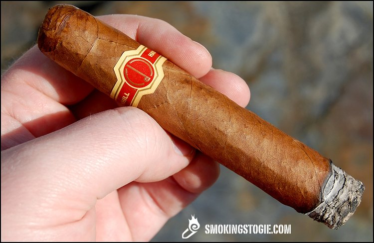
ダンヒルの葉巻は、作り手の物語ではありませんでした。工場を持たず、葉を育てず、それでも「究極のハバナ葉巻」を名乗れたのは、選ぶ目と、番号で管理する几帳面さと、ロンドンで熟成させる時間があったからです。その仕組みは1982年に終わり、自社名ブランドも1991年までにキューバを去り、名前だけが非キューバで四半世紀を生き延びて、2018年に完全に消えました。残ったのは、オークションに現れる箱と、CA の100点と、日本の収集家が世界記録で落とした10本箱の記憶です。「強いブランド」は、静かに終わることもある。本特集は、その静かな終わり方の記録です。